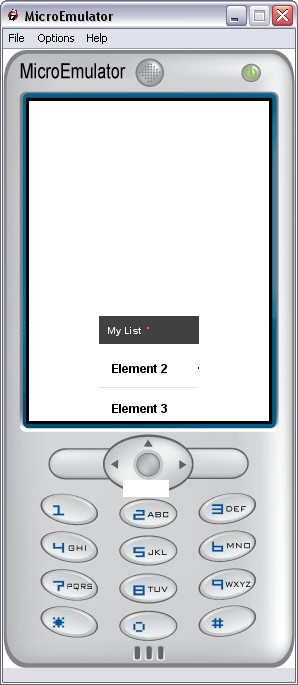

Slider prototype

Introduction
Slides some content and displays a background and title surrounding the content.
Interface
Fields description
Data fields
- MFString titleLabel - Title in a Ticker displayed above content, when empty, title zone will be hidden.
- MFNode content - The content which slides
Style fields
- SFVec2f size - Size of content of slider
- SFVec2f textScale - Used for scaling text if necessary (phone with small fonts)
- MFString style - Style to use for this prototype (Default: Slider)
- MFString titleStyle - Style to use for the title (Default: Slider-title)
- MFSting images - Optional title image & background image for the content
- SFVec2f screenSize - Screen resolution
Warning:
Define style is required (we can use the default style - see
Style node).
Exposed Fields
- SFBool hide - Sends FALSE when sliderTrs starts to slide up and sends TRUE when sliderTrs starts to slide down
- SFBool enable - Enable/disable Slider
Event Out
- SFVec2f contentPos - Return position of the content
- SFTime finished - When slide animation is finished
Extern proto(s)
Ticker
CSS
Example